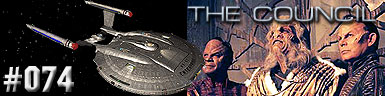
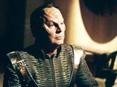
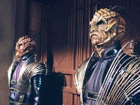
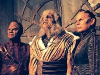
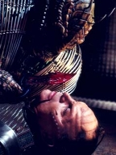

|
Enterprise
Temporada 3

Anlise do episdio por
Salvador Nogueira



|
MANCHETE
DO EPISDIO |
Comentrios:    
"The Council"
o episdio que finalmente define contra quem a Enterprise est
lutando e com quem poder contar em seu confronto final para
salvar a Terra. Por conta disso, um episdio muito mais
explicativo do que qualquer outra coisa. Aprendemos mais do que
nunca sobre o Conselho em si e as cinco espcies Xindis.
A maior qualidade do segmento, sem dvida, a forma como ele
encerra a trajetria de Degra, o cientista responsvel pela criao
da arma que deve destruir a Terra e que afinal reconhece a maneira
como os Xindis tm sido manipulados pelos construtores das
Esferas desde sempre.
Mais que isso, o assassinato de Degra serve como um ponto focal no
episdio, o momento em que os Reptilianos decidem romper com sua
estratgia enganadora e admitir que no seguiro as determinaes
do Conselho, lanando a arma de qualquer modo. a transio
que resgata o episdio de um perigoso flerte com dilogos pouco
convincentes e pouco pungentes, enquanto Archer tenta convencer o
Conselho de que no seu inimigo.
As trocas entre Degra e Trip tambm carecem da fora que
deveriam ter, embora fique claro que o roteirista tenha tentado ao
mximo destacar o quanto Tucker jamais poderia perdoar o Xindi
pelo ocorrido. Acho que faltou coragem para admitir que o
engenheiro jamais trabalharia com Degra, em circunstncia alguma.
Perdemos uma boa oportunidade de ver um conflito razovel entre
ele e o capito Archer.
Os demais personagens nem tm muito o que fazer. Como fica claro
pelo final, estamos apenas vendo uma preparao para o
verdadeiro fil. Hoshi Sato sequestrada pelos Reptilianos,
que, aliados aos Insetides, decidem lanar a arma revelia do
Conselho. Os Humanides e Arbreos decidem apoiar a Enterprise e
tentar impedir a destruio da Terra. Os Aquticos, assim como
comearam o episdio, ficam no meio do caminho. A NX-01 preocupa
os construtores das Esferas com suas anlises das fraquezas dos
objetos. mais do que bvio que a ao de verdade ainda est
para acontecer.
Reed - "Maybe we're getting a
little too comfortable with the casualty rate."
("Talvez ns estejamos ficando confortveis demais sobre a
taxa de baixas.")
Conselheiro Rptil, para Degra - "The crew of that ship are the
last Xindi you will betray. When the humans are dead and the Reptiles
have replaced the council, I'll hunt down your family and end your
traitorous bloodline."
("A tripulao daquela nave foram os ltimos Xindi que voc
traiu. Quando os humanos estiverem mortos e os Rpteis tiverem substitudo
o Conselho, eu vou caar sua famlia e acabar com sua linhagem de
traidores.")
 A fotografia principal para "The Council" ocorreu entre
12 e 23 de fevereiro de 2004, fazendo uso de diversas novas locaes,
como uma viso mais ampla de onde o Conselho Xindi se localiza.
A fotografia principal para "The Council" ocorreu entre
12 e 23 de fevereiro de 2004, fazendo uso de diversas novas locaes,
como uma viso mais ampla de onde o Conselho Xindi se localiza.
 O elenco convidado est consideravelmente amplo para este segmento,
incluindo todos os atores que compem os personagens no Conselho Xindi,
alm do retorno de Sean McGowan como o Corporal Hawkins, do MACO.
O elenco convidado est consideravelmente amplo para este segmento,
incluindo todos os atores que compem os personagens no Conselho Xindi,
alm do retorno de Sean McGowan como o Corporal Hawkins, do MACO.
Escrito por Manny Coto
Direo de David Livingston
Exibido em 12/05/2004
Produo: 074
Elenco:
Scott
Bakula como Jonathan Archer
Jolene Blalock como
T'Pol
John Billingsley
como Phlox
Anthony Montgomery
como Travis Mayweather
Connor Trinneer como
Charlie 'Trip' Tucker III
Dominic Keating como
Malcolm Reed
Linda Park como Hoshi Sato
Elenco convidado:
Randy Oglesby como Degra
Tucker Smallwood como Xindi-Humanide
Rick Worthy como Xindi-Preguia
Scott MacDonald como Comandante Rptil
Josette DiCarlo como Construtora da Esfera
Sean McGowan como Hawkins
Bruce Thomas como Soldado Rptil
Andrew Borba como Tenente Rptil
Mary Mara como Construtora da Esfera
Ruth Williamson como Lder dos Construtores da Esfera
Eric Lemler como Tripulante do Leme
Sinopse, trivias e ficha
tcnica por Leandro
M.Pinto